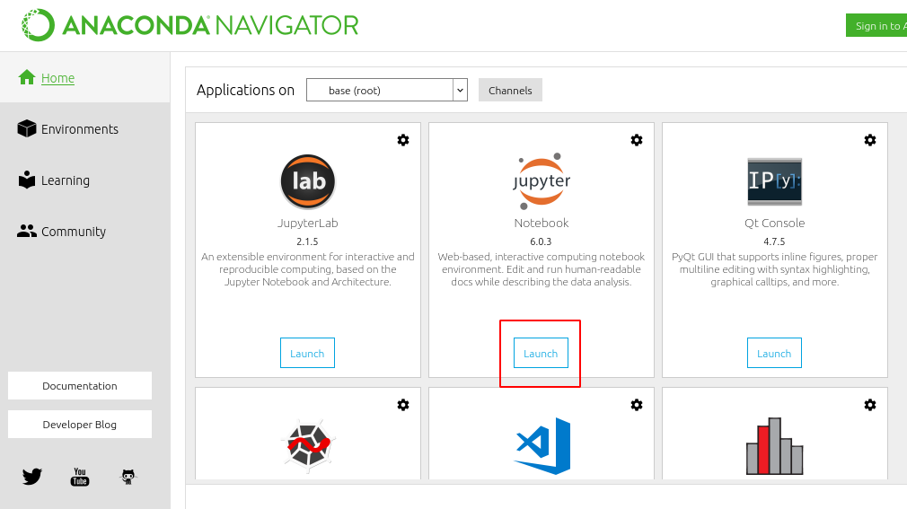
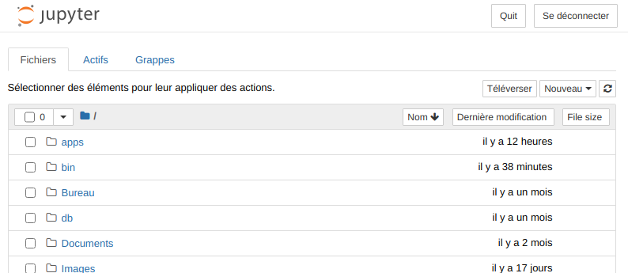
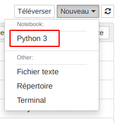

Utilisation des notebooks pour développer en Python
1 Objectif
L'objectif de ce premier TD est de se familiariser avec le concept des notebooks et les environnements de développement collaboratif tels que Google Colab ou Deepnote.
2 Les Notebooks
Un notebooks en programmation est une interface permettant de développer des programmes (ici en Python) et d'en présenter
les résultats de manière interactive en y incluant de la documentation. Cette manière de programmer
met en pratique la démarche de programmation lettrée[1] (literate
programming, en anglais). Cette démarche est particulièrement bien adaptée aux projets de science
des données qui mèlent en général développements informatiques, visualisations et interprétations.
Un notebook est donc constitué de blocs de code Python, des résultats associés (qui peuvent être
des tableaux, des graphiques, du texte, etc) et du texte formaté dans un même document. L'objectif
est de favoriser la transparence, la compréhension, la reproductibilité et le partage de travaux
scientifiques et techniques.
L'utilisation de notebooks est désormais une pratique classique dans les projets de science des
données dans le monde académique et en entreprises. Bien que dans ce cours nous n'utiliserons que
des notebooks Python, de nombreux outils proposent de travailler avec les principaux langages
scientifiques usuels aujourd'hui (e.g. R, Ruby, Julia, etc).
3 L'environnement Google Colab
Google Colab est une plateforme de développement collaboratif intégrée à l'écosystème Google. Cette plateforme est gratuite sous réserve de disposer d'un compte Google.
3.1 Création d'un premier notebook
- Se rendre à l'adresse suivante : https://colab.research.google.com/notebooks/intro.ipynb#recent=true.
- Créer un compte Google (si nécessaire).
- Créer un nouveau nouveau notebook.
3.2 Interface d'un notebook
Les notebooks doivent être vus comme un outil d'édition de texte avancé. Tout au long de ce cours, nous explorerons ses principales fonctionnalités.
En parcourant l'interface, deux termes assez importants et probablement nouveaux pour
vous apparaissent : les cellules (cf. Section 3.2.1) et les noyaux (cf. Section
3.2.2). Ces deux notions sont essentielles pour
comprendre en quoi Google Colab est bien plus qu'un simple éditeur de texte.
3.2.1 Les cellules
Les cellules sont les éléments constitutifs d'un notebook. Il existe deux catégories principales de cellules :
- Les cellules de code qui contiennent donc du code
Pythonà exécuter dans le noyau (cf. Section 3.2.2. Lorsque le code est exécuté, le notebook affiche le résultat produit parPythonsous la cellule du code correspondant. - Une cellule de texte contient du texte formaté à l'aide du langage
Markdownet affiche le rendu lorsque la celluleMarkdownest exécutée.
3.2.2 Les noyaux
Un noyau est un moteur de calcul qui exécute le code contenu dans un notebook. Derrière chaque notebook, un noyau est démarré attendant patiemment du code à évaluer. Lorsque vous exécutez une cellule de code, ce code est exécuté dans le noyau puis le résultat (ou sortie) est renvoyé à la cellule pour y être affiché. L'état du noyau persiste dans le temps et entre les cellules. Le noyau concerne donc le notebook dans son ensemble et non les cellules individuellement.
Par exemple, si vous importez des bibliothèques ou déclarez des variables dans une cellule, elles seront disponibles dans les autres cellules de votre notebook.
4 Annexe : Travailler en local avec Jupyter
4.1 Installation de l'environnement Python
Si vous êtes débutant et quel que soit votre système d'exploitation, le plus simple est d'installer
la distribution Anaconda qui contient tous les outils dont vous aurez besoin pour travailler avec
Python et en particulier l'interpréteur Python 3.8 et Jupyter.
Une fois Anaconda installée, lancez le programme Anaconda Navigator qui vous permettra d'avoir
rapidement accès à tous les principaux outils de l'écosystème Python.
Dans la case intitulée Qt Console, cliquez sur Launch. Vous devez voir apparaître une fenêtre de
terminal apparaître avec à l'intérieur :
IJupyter QtConsole 4.7.5 Python 3.8.3 (default, Jul 2 2020, 16:21:59) Type 'copyright', 'credits' or 'license' for more information IPython 7.17.0 -- An enhanced Interactive Python. Type '?' for help. In [1]:
Ce terminal est un interpréteur Python. C'est à dire que si vous écrivez une commande
Python correct, cet interpréteur est capable de l'évaluer et de renvoyer le résultat. Certains
pourront voir cet interpréteur comme l'ancêtre un peu austère des notebooks.
Par exemple, vous pouvez utiliser Python comme une machine à calculer :
IJupyter QtConsole 4.7.5 Python 3.8.3 (default, Jul 2 2020, 16:21:59) Type 'copyright', 'credits' or 'license' for more information IPython 7.17.0 -- An enhanced Interactive Python. Type '?' for help. In [1]: 1 + 1 Out[1]: 2
Pour quitter l'interpréteur, tapez simplement exit().
Comme vous pouvez l'imaginer l'interpréteur Python (que l'on appelle également console Python)
n'a pas pour vocation de servir de simple machine à calculer. En effet, cette console sert en
pratique à écrire et évaluer n'importe quels programmes Python. Pour plus de confort lors du
développement de grands programmes, il est possible de rédiger son code dans un fichier séparé puis
de l'exécuter dans l'interpréteur.
L'information a retenir est la suivante : sans interpréteur Python, impossible d'exécuter un
programme Python2.
4.1.1 Lancer Jupyter Notebook
Lancez tout d'abord le programme Anaconda Navigator, puis cliquez sur le bouton Launch du cadre
intitulé Jupyter Notebook (cf. Figure fig_anaconda_navigator_launch_jupyter)

Figure 1 : Lancement de Jupyter Notebook depuis Anaconda Navigator.
Une fois démarré, l'outil Jupyter Notebook affiche un tableau de bord (cf. Figure
fig_jupyter_dashboard) permettant d'explorer, créer
et éditer vos notebooks Jupyter.

Figure 2 : Tableau de bord de Jupyter.
Remarques geeks:
- Le tableau de bord vous donnera accès uniquement aux fichiers et sous-dossiers contenus dans le
répertoire de démarrage de
Jupyter(c'est-à-dire oùJupyterouAnacondaest installé). - Il est également possible de démarrer le tableau de bord sur n'importe quel système via l'invite
de commande (ou le terminal sur les systèmes Unix) en entrant la commande
jupyter notebook. Dans ce cas, le répertoire de travail courant sera le répertoire de démarrage. Jupyter Notebooks'ouvre dans votre navigateur web à une adresse qui doit ressembler à http://localhost:8888/tree.Localhostdésigne ici votre propre machine et8888désigne le numéro d'un port de communication sur lequel "écoute" un serveurPython(autrement dit une sorte d'interpréteurPython) qui exécutera les commandes que vous saisirez dans vos notebooks.- Les notebooks et le tableau de bord de
Jupytersont donc des applications Web mais il est important de comprendre qu'en utilisantJupyter(et contrairement àGoogle Colab) vos notebooks ne sont pas réellement sur le Web (mais bien sur votre ordinateur local).
4.1.2 Créer un nouveau notebook
L'interface du tableau de bord est relativement intuitive. Pour créer votre premier notebook,
accédez au dossier dans lequel vous souhaitez travailler puis cliquez sur le bouton déroulant
Nouveau en haut à droite et sélectionnez Python 3 (cf. Figure fig_jupyter_dashboard_new_notebook).

Figure 3 : Création d'un nouveau notebook.
Votre premier notebook Jupyter s'ouvre dans un nouvel onglet. À noter que chaque notebook
utilise son propre onglet car vous pouvez ouvrir plusieurs notebooks simultanément.
En revenant au tableau de bord, vous verrez qu'un nouveau fichier Untitled.ipynb a été créé avec
une icône verte et un texte running indiquant que votre notebook est en cours
d'exécution.
Notes de bas de page:
cf. https://fr.wikipedia.org/wiki/Programmation_lettr%C3%A9e pour la culture
Contrairement à un programme écrit dans un langage compilé comme le C ou C++ pour
lequel la présence du compilateur n'est pas nécessaire pourvu d'avoir le fichier
exécutable.